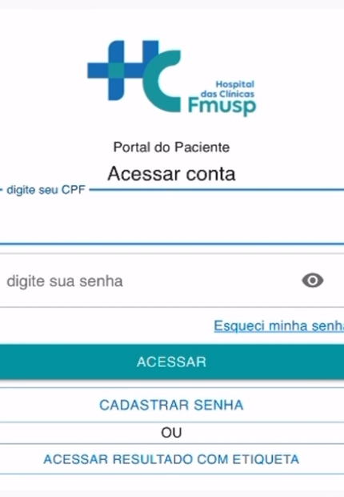
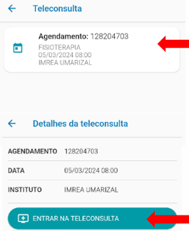

📲 Como fazer sua consulta pelo celular (teleconsulta)
ℹ️ O que é teleconsulta?
É uma consulta com o médico pelo celular, tablet ou computador.
Você não precisa sair de casa.
Você e o médico conversam por vídeo.
Fizemos este passo a passo para te ajudar, de forma simples, a acessar sua consulta online com segurança e sem complicações.
✅ O que você vai precisar:
- 📱 Um celular com internet
- 🧾 Seu CPF
- 🔊 Câmera e microfone funcionando
- 🕑 Estar disponível no dia e horário marcado
✳️ 1. Baixe o aplicativo
Vá até a loja de aplicativos do seu celular:
Se for Android: Play Store
Se for iPhone: App Store
Procure por Portal do Paciente HC e instale o aplicativo.
🆕 2. Cadastre sua senha (primeiro acesso)
- Abra o aplicativo e toque em "Cadastrar Senha"
- Digite seu CPF e toque em "Localizar Paciente"
- Preencha seus dados (nome, telefone, e-mail...)
- Crie uma senha fácil de lembrar
- Volte para a tela inicial, digite o CPF e a senha e toque em "Acessar"
📅3. Acesse sua consulta
- No menu, toque em "Teleconsultas"
- Leia e aceite o termo de autorização
- Toque duas vezes no nome da sua consulta
- Depois, toque em "Entrar na Teleconsulta"
- Ative o microfone e a câmera
- Aguarde o profissional entrar na sala
💡 Dicas importantes

Fique em um local silencioso e com boa internet
Se não souber mexer, peça ajuda a alguém de confiança
Se der erro ou cair a conexão, tente novamente ou entre em contato com o hospital
A consulta é gratuita e feita com toda a segurança
🧡 Lembre-se Você não está sozinho. A equipe do IMREA quer te ajudar a cuidar da sua saúde, mesmo à distância.